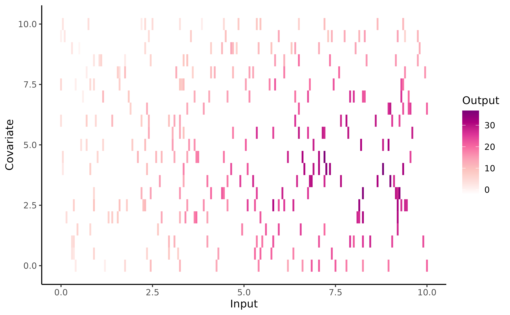
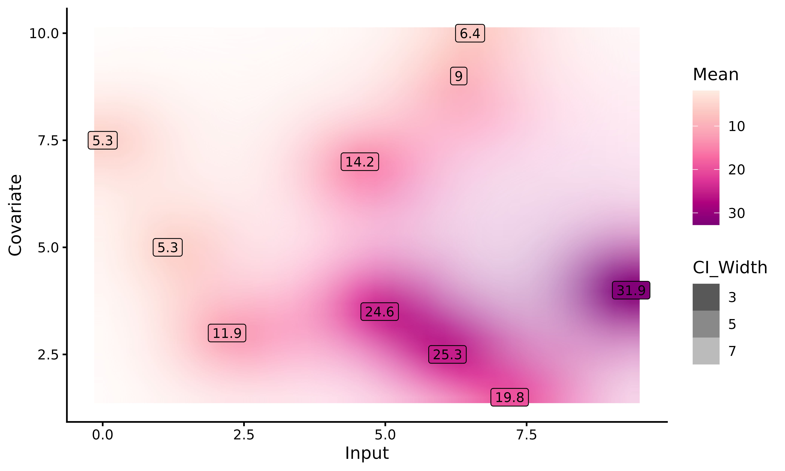
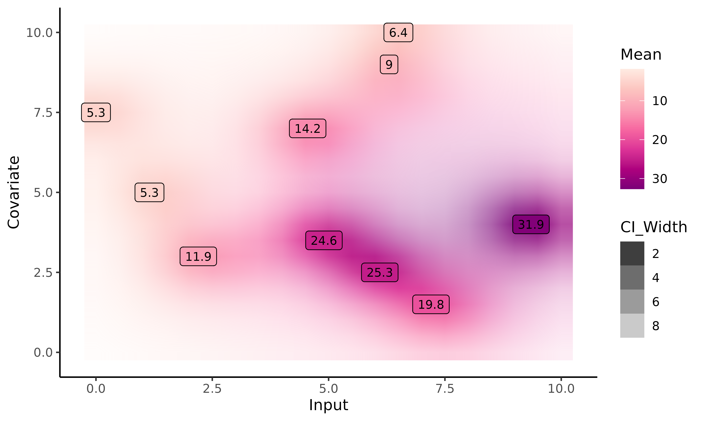

Purpose
In Magma
and MagmaClust
vignettes, it has been emphasised that, to be processed within
MagmaClustR, a dataset must contain at least 3 mandatory
columns: ID, Input and Output.
However, let us point out that both Magma and
MagmaClust can also handle multi-dimensional inputs. Notice
that there are no constraints on the names of the additional input
columns (except for the name Reference that is used internally
in the code and should be strictly avoided).
Throughout the following synthetic example, the Magma
algorithm is applied to tackle a 2-dimensional forecasting problem. More
specifically, the model is trained on a dataset that contains 2 input
variables, namely Input and Covariate.
Data generation
To explore the features of Magma in 2D, we simulate a synthetic
dataset thanks to the simu_db() function. To customise this
dataset, we can specify several parameters, such as:
the number K of underlying clusters in our dataset. Since we do not assume that there are group structures in our data, we set
K = 1(default).the number M of individuals per cluster. Even if Magma performances improve with respect to the number of training individuals, 30 are more than enough to get an idea of how this 2D version works. Thus, we specify
M = 31: 30 individuals for the training, 1 for the prediction.the number N of observations per individual. Here, we set
N = 10data points.the presence / absence of an additional input named
Covariate. As we want to handle multi-dimensional inputs, we specifycovariate = TRUE.the fact that all individuals share common inputs (regular or irregular measurements among individuals). Here, we set
common_input = FALSEto define a grid that covers various regions of the input space (InputandCovariate).
Many additional arguments are available, see simu_db()
for details.
set.seed(3)
data_dim2 <- simu_db(M = 31,
N = 10,
K = 1,
covariate = TRUE,
common_input = FALSE)
knitr::kable(head(data_dim2))| ID | Input | Covariate | Output |
|---|---|---|---|
| 1 | 0.95 | 6.0 | 5.145306 |
| 1 | 1.80 | 2.5 | 7.277505 |
| 1 | 2.35 | 4.0 | 10.054762 |
| 1 | 3.65 | 2.0 | 17.831701 |
| 1 | 5.15 | 7.0 | 18.321026 |
| 1 | 5.30 | 0.5 | 17.015734 |
To provide a visual intuition of the values contained in training
set, we can display raw data (using the signature gradient colour of
MagmaClustR ;) ) with the following code:
ggplot(data_dim2) +
geom_tile(aes(x = Input, y = Covariate, fill = Output)) +
theme_classic() +
scale_fill_gradientn(colours = c(
"white",
"#FDE0DD",
"#FCC5C0",
"#FA9FB5",
"#F768A1",
"#DD3497",
"#AE017E",
"#7A0177"))
Let us mention that any dataset in MagmaClustR can be
regularised if necessary (in the sense that we can modify the input grid
to match a specific format). To this end, the
regularize_data() function is proposed, allowing us to
constrain the number of data points per input, or specify ‘by hand’ a
surrogate grid of inputs on which to project our data. This function
takes the arguments:
-
data,corresponding to database we want to regularise; -
size_grid, indicating how many points each axis of the grid must contain; -
grid_inputs, the grid on which we want to project our data. If NULL (default), a dedicated grid of inputs is defined: for each input column, a regular sequence is created from the min input values to the max, with a number of equispaced points equal to the ‘size_grid’ argument. We could also project our data on a specificgrid_inputs(which may come from the dedicatedexpand_grid_inputs()function; see Customise graphs for details). This grid does not necessarily have the same number of points along all axes. -
summarise_fct, a function used to summarise data points if several similar inputs are associated with different outputs.
For instance, if we would want to evaluate our synthetic dataset on a \(5 \times 5\) grid of inputs summarise the projected outputs according through their mean, we could call:
data_dim2_reg <- regularize_data(data = data_dim2,
size_grid = 5,
grid_inputs = NULL,
summarise_fct = "mean")
knitr::kable(head(data_dim2_reg))| ID | Input | Covariate | Output |
|---|---|---|---|
| 1 | 0.0 | 5.0 | 5.145306 |
| 1 | 2.5 | 2.5 | 12.554603 |
| 1 | 2.5 | 5.0 | 10.054762 |
| 1 | 5.0 | 0.0 | 17.015734 |
| 1 | 5.0 | 7.5 | 18.321026 |
| 1 | 7.5 | 5.0 | 25.512476 |
Finally, we split our individuals into training and prediction sets.
Training and prediction in 2-D
The overall process of Magma remains identical as in the 1-D
case, and can be decomposed in 3 main steps: training,
prediction and plotting of results. We refer
to the Magma
vignette for the complete description of the classical pipeline: -
we call the train_magma()
function to train our model:
set.seed(3)
model_dim2 <- train_magma(data = dim2_train,
kern_0 = "SE",
kern_i = "SE",
common_hp = TRUE)
#> The 'prior_mean' argument has not been specified. The hyper_prior mean function is thus set to be 0 everywhere.
#>
#> The 'ini_hp_0' argument has not been specified. Random values of hyper-parameters for the mean process are used as initialisation.
#>
#> The 'ini_hp_i' argument has not been specified. Random values of hyper-parameters for the individal processes are used as initialisation.
#>
#> EM algorithm, step 1: 8.97 seconds
#>
#> Value of the likelihood: -1113.45324 --- Convergence ratio = Inf
#>
#> EM algorithm, step 2: 6.97 seconds
#>
#> Value of the likelihood: -1079.21656 --- Convergence ratio = 0.03172
#>
#> EM algorithm, step 3: 6.96 seconds
#>
#> Value of the likelihood: -1078.66572 --- Convergence ratio = 0.00051
#>
#> The EM algorithm successfully converged, training is completed.
#> - we perform prediction for a new individual thanks to
pred_magma(). Here, we do not specify thegrid_inputsargument; in this case, a default grid is automatically generated bypred_magma(), ranging between the min and maxInputandCovariatevalues of our dataset. However, if we want to perform prediction on a specific 2-D area, we could provide a specificgrid_inputs; see Even prettier graphics section for details.
pred_dim2 <- pred_magma(data = dim2_pred,
trained_model = model_dim2,
plot = FALSE)
#> The hyper-posterior distribution of the mean process provided in 'hyperpost' argument isn't evaluated on the expected inputs.
#>
#> Start evaluating the hyper-posterior on the correct inputs...
#>
#> The 'prior_mean' argument has not been specified. The hyper-prior mean function is thus set to be 0 everywhere.
#>
#> Done!
#> - we display the results with
plot_gp(). As this step constitutes the main evolution of the one-dimensional version, we devote an entire section to discuss it below.
Display of results
With the plot_gp()
function, we can display the predicted posterior mean values of
ID = 31. The prediction is represented as a 2-D heatmap of
probabilities where:
- the x-axis corresponds to the
Inputcolumn of our dataset; the y-axis, to theCovariatecolumn; - each (x,y) couple of inputs is associated with a colour (from a colour gradient range) corresponding to the posterior mean value at this input. The darker the posterior mean, the higher the value;
- the uncertainty is represented on the graph by the transparency/opacity associated with the previous colour. The narrower the 95% Credible Interval, the more opaque the associated colour.
Unfortunately, 2-D inputs inevitably lead to constraints when it comes to visualisation, preventing us to provide as much information as for 1-D. In particular, the graph below does not display the mean process nor the training data, as we were not able to find appropriate representations (that would also not surcharge the graph).
plot_gp(pred_gp = pred_dim2,
data = dim2_pred) 
Customise graphs
With a specific grid of inputs
As with the unidimensional version, we can create our own grid of
inputs if we want to perform prediction on a specific 2D area
(potentially wider than the dataset one). Contrary to the unidimensional
version, the grid_inputs can no longer be a simple sequence
of numbers for which the prediction must be performed, but a 2D grid
containing :
- on the x-axis, a sequence of
Inputfor which we want to perform prediction ; - on the y-axis, a sequence of
Covariatefor which we want to perform prediction.
To create our grid, we use the create_grid_inputs()
function. We only have to specify a sequence of Input and
as many covariates as we want. However, we must also ensure that we do
not generate too much data points ; we recall that Magma has a cubic
complexity, so the execution can be extremely long depending on the
number and length of sequences. Therefore, we advise to reduce the
length of the Inputs sequences if we want to perform a high dimensional
prediction. Moreover, each Input must have the same name as in the data
base to avoid errors during the prediction step.
grid_inputs_dim2 <- expand_grid_inputs(Input = seq(0,10,0.5), Covariate = seq(0,10,0.5))
pred_dim2 <- pred_magma(data = dim2_pred,
trained_model = model_dim2,
grid_inputs = grid_inputs_dim2,
plot = TRUE)
#> The hyper-posterior distribution of the mean process provided in 'hyperpost' argument isn't evaluated on the expected inputs.
#>
#> Start evaluating the hyper-posterior on the correct inputs...
#>
#> The 'prior_mean' argument has not been specified. The hyper-prior mean function is thus set to be 0 everywhere.
#>
#> Done!
#> 
Here, we perform prediction on a grid_inputs wider than
the one generated automatically by pred_magma(). For
Input values higher than the dataset ones, no observations
are available, neither from ID = 31 nor from the training
dataset. Magma behaves as expected, with a slow drifting to the prior
mean (here, zero) and an highly increasing variance.
Create a 2D GIF
As with 1-D Magma, it is possible to create animated representations
thanks to pred_gif()
and plot_gif().
These functions offer dynamic plots by generating GIFs thanks to
gganimate package. Then, we can observe how the prediction
evolves as we add more data points to our prediction dataset.
pred_gif() and plot_gif() functions work
the same as pred_magma() and plot_gp() in the
2D version. Some extra arguments can be customized in
plot_gif(), like adjusting the GIF speed, saving the
plotted GIF, etc…
Magma 2-D vs GP 2-D
The MagmaClustR package also provides a prediction with classic GPs in 2D; thus, we can compare Magma and classic GPs predictions.
The graphs below correspond to the 2D dynamic prediction with Magma (first one) and classic GP (second one).


This example highlights the advantage of sharing information across individuals: even before seeing any data, Magma provides an already accurate mean process. As we add more data for the individual of interest, the uncertainty of predictions slightly decreases, although the main trend remains mainly similar.
On the other hand, the classic GP struggles to find the shape of the underlying process. On unobserved regions of the graph, the prediction remains far from the original process. As expected, though, the more data we add, the better becomes the prediction with standard GP.